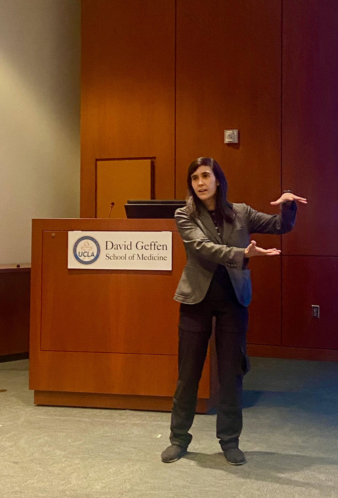

Medical Neurotechnology · Quality · Capital · Field Architecture
I work on making neurotech work.
Cross-pollinating viewpoints between quality engineering, writing, and funding to have real-time hands-on knowledge of how the field works and how it is evolving.
My flagship canon, MECHANISMS, names the hidden patterns that cause capable teams to produce value that goes uncaptured, good research to stall, and prevent promising devices from reaching patients.
I earned a PhD in neuroscience from the University of Michigan. My research focused on brain rhythms and how neural circuits work together. Today I work across quality engineering, venture investing, writing, and strategy in neurotechnology.
My work turns hard-won knowledge into tools and resources others can use.

No login, no email needed.
No login, no email needed.